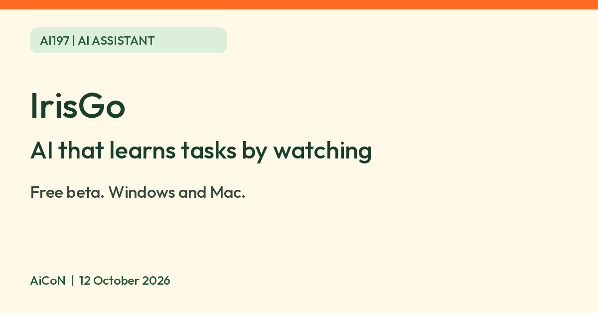

IrisGo: free beta AI that learns tasks by watching you, with privacy limits
IrisGo is an AI assistant for Windows and Mac that is advertised as learning a routine task from one demonstration. Its page says "Free beta"; no price after the beta is stated.

What it is
IrisGo is a desktop AI assistant for Windows PCs and Macs that learns routine computer tasks by watching you do them once. On its solopreneur page, IrisGo shows a user filing an expense report, then telling it to repeat the steps with a new receipt. The same page lists a morning brief from your calendar and email, email triage that pulls out bills and deadlines, and meeting recaps. IrisGo describes itself as an "AI operating system" and an "AI Executive Assistant". The page is written for independent professionals, but nothing on it says anyone else is blocked.
Is it free?
The company advertises a "Free beta". This is a beta offer, not a promise that it will stay free. We could not find a price for after the beta, an end date, or a free-plan limit on IrisGo's pages. Check the current signup screen and any model/provider charges before relying on the offer. We did not create an account or verify checkout or entitlements.
Who can use it
- IrisGo's page says "Windows and Mac". Its launch note says it runs on "Windows PCs and macOS computers". The working beta download page lists a macOS Apple Silicon DMG, v0.2.7, and a Windows 64-bit installer. We did not find minimum OS versions or memory needs, or an Intel Mac option on that page.
- The company's home page talks about using a computer's local NPU and GPU for private, fast processing. It does not say that a PC without one cannot run it.
- The pages do not list countries and we found no statement about India. We did not install it.
- The privacy policy says the service is not designed for children under 13 or teens.
Privacy: read this before you try it
A tool that learns by watching your screen needs trust. What IrisGo's privacy policy says:
- It does not continuously record your screen or video. Only screenshots are captured.
- By default, screen and audio data stay on your device unless you explicitly submit them to an AI model. Raw audio is never stored, and transcription happens locally.
- If you turn on automatic task detection, it may periodically analyse your screen contents and transcripts.
- For some requests, data can be processed off the device by a service provider. The policy says cloud requests route through OpenRouter by default to the selected provider, unless you connect your own AI provider; local-model requests process on device. Google content can also be sent to that provider by an enabled background feature, such as to-do detection. Local-first is not the same as always offline.
- If you turn on cloud sync and transcription, transcripts are processed in the cloud and the original audio is discarded.
- It says it never sells personal data. It says it does not use Gmail, Drive or Calendar data to train general AI models.
- Its launch note says workflows sync across machines through cloud backup. The policy also says limited feature-interaction/crash data and hardware/OS information are collected; it is not a no-telemetry claim.
- The policy describes a rolling local copy of about 14 days of Gmail/Calendar data and says Drive is fetched on demand. Disconnecting deletes credentials and synced messages/events, but derived notes and conversation history remain locally until you delete them. Account deletion requests go to help@irisgo.ai; some data may be retained for legal obligations or disputes. We did not test deletion.
- The Google-data no-general-training rule covers Google data and its derivatives, not a blanket promise for all screen captures or uploads.
AiCoN advice: leave automatic task detection and cloud sync off at first, and try one workflow with non-sensitive files. Do not record a task on a screen showing banking or private messages.
How to try it
- Use the official beta download page for the listed macOS Apple Silicon or Windows 64-bit build. The generic /download path returned 404, but the home page links to this working /download/beta page. We verified the page, not the installer. Avoid unofficial mirrors and do not bypass system security warnings.
- Verify system requirements and permissions before installing. After reviewing the terms, the company describes signing in and viewing workflow walkthroughs. We did not verify this in an account.
- Use Workflows, then Record workflow, to show it one small task, and check the result each time.
Limits to know
- It is a beta, so expect changes and bugs. Terms say service availability and error-free operation are not guaranteed and features may change or stop.
- The beta's end and the future price are not stated.
- Every automated action is yours to check, especially anything that sends, pays, deletes or files. Review recipients, amounts and destinations before allowing consequential steps. Avoid relying on "learn once, run forever" as a guarantee that changed websites or apps will still work.
- Not tested by AiCoN. We did not download/install, grant screen/audio/accessibility permissions, connect accounts, record/replay a workflow, send, pay or test removal. The screenshots and examples are the company's. Privacy claims above are policy statements, not an independent audit.
Frequently asked questions
Is IrisGo free?
Its page says "Free beta". No price after the beta is stated.
Does it record my screen all the time?
Its privacy policy says it does not continuously record the screen or video and only captures screenshots. Automatic task detection is something you can opt into.
Does it work on Windows and Mac?
The page says Windows and Mac. The beta download page lists macOS Apple Silicon and Windows 64-bit; minimum OS/RAM requirements and actual compatibility remain unverified.
What changed since this post?
Sources checked 12 October 2026. Free beta remains the advertised offer; no post-beta price, end date or free-plan limit was found. Added cloud-model/background-processing, telemetry, local-cache and deletion caveats. The home page's /download/beta link works and lists Apple Silicon macOS and Windows 64-bit builds; only the generic /download path returned 404. India access and installer compatibility remain unverified.
Sources: IrisGo for solopreneurs, IrisGo home, Launch note, Privacy policy, Beta download page, Terms. Checked 12 October 2026.